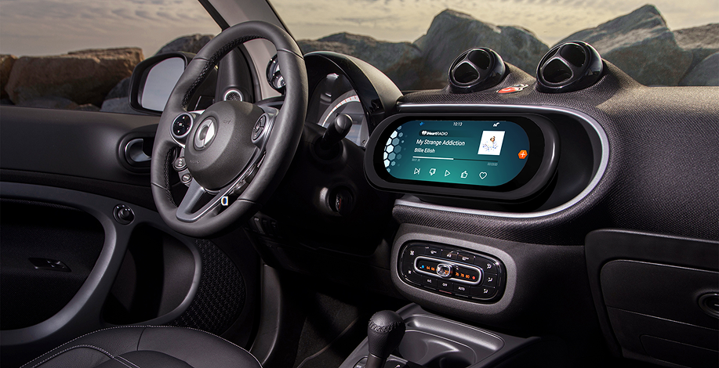
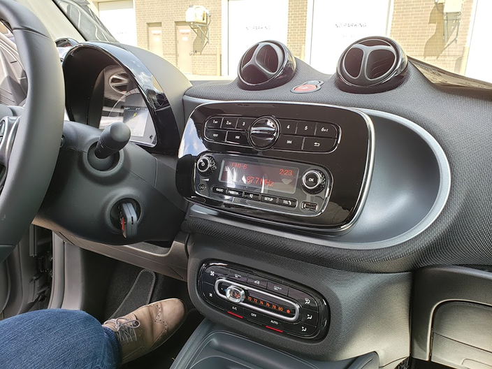
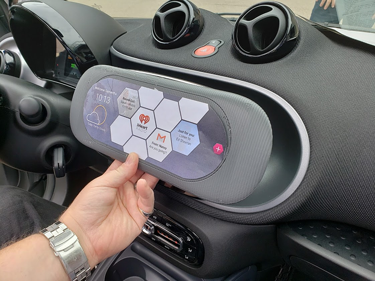
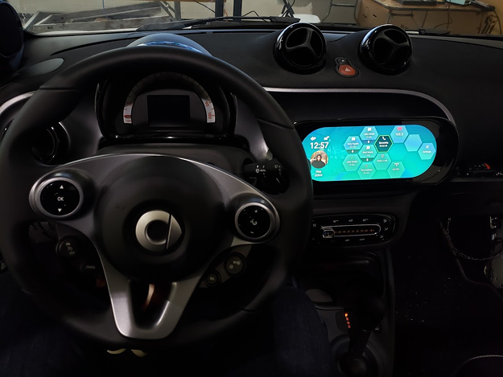
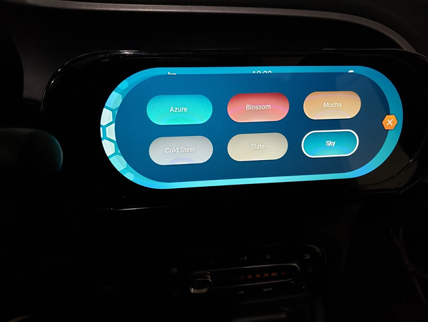
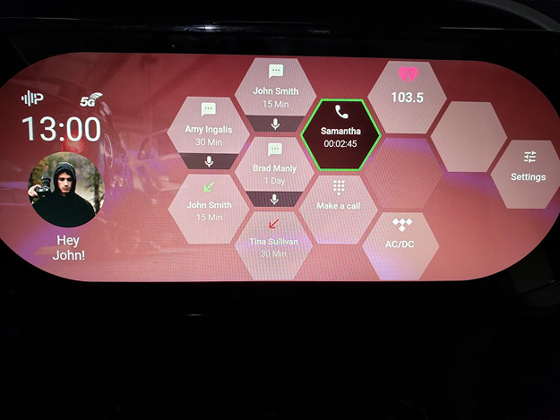
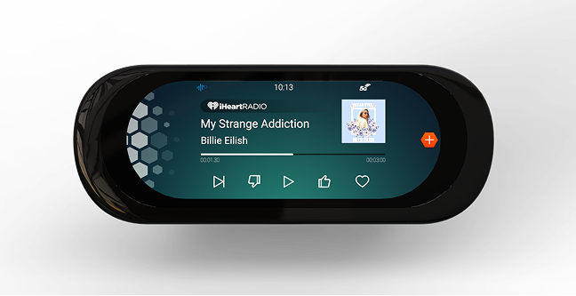
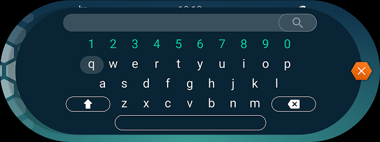

vehicle Infotainment
Harman International
For the 2020 Consumer Electronics Show (CES), Harman and Samsung partnered to develop a conceptual infotainment system for the Smart Fortwo vehicle. The goal was to showcase an innovative infotainment system that aligned with Harman's vision for connected mobility in small, affordable vehicles like the Smart Fortwo. The resulting concept, VisionNext, was a fully functional prototype displayed live at CES 2020. I contributed to the UX/UI design, branding elements, and prototyping.

The Challenge
Harman needed a high-impact, forward-looking infotainment system that would:
This project required rapid iteration, cross-functional collaboration, and physical prototyping to create a seamless digital and hardware experience.
Design Tools & Materials
Figma for wireframes, interaction flows, final UI mock-ups.
3D printer for fabrication of physical components for the prototype.

Original Entertainment Center in Smart Fortwo
Prototyping & Testing
Unlike consumer-facing infotainment design, VisionNext was created for an event environment, where it would be used by many different guests and be demoed to audiences. The design needed to be intuitive, touch-friendly, and instantly impressive — especially in a fast-moving show environment.
CES Attendees, Automotive industry leaders, Press and media
Review the original interior and study its design and materials
Analyzing user interaction patterns for small electric city cars

3D Printed Prototype

Fully Functional Prototype

Different Color Themes

Home Page in Red Color Theme

Final Working Prototype for CES 2020
The Smart Fortwo features hexagon tessellations in its interior design (air vents, speaker grilles, panel geometry). We used this signature shape as a foundation for the VisionNext interface, incorporating it into icon styles, button shapes, and background patterns. This design approach created a visual bridge between the digital UI and the physical vehicle environment.

My role as a visual designer included creating iconography, establishing color palettes that felt fun and matched the energy of the Smart Fortwo, and UI mock-ups including the keyboard.